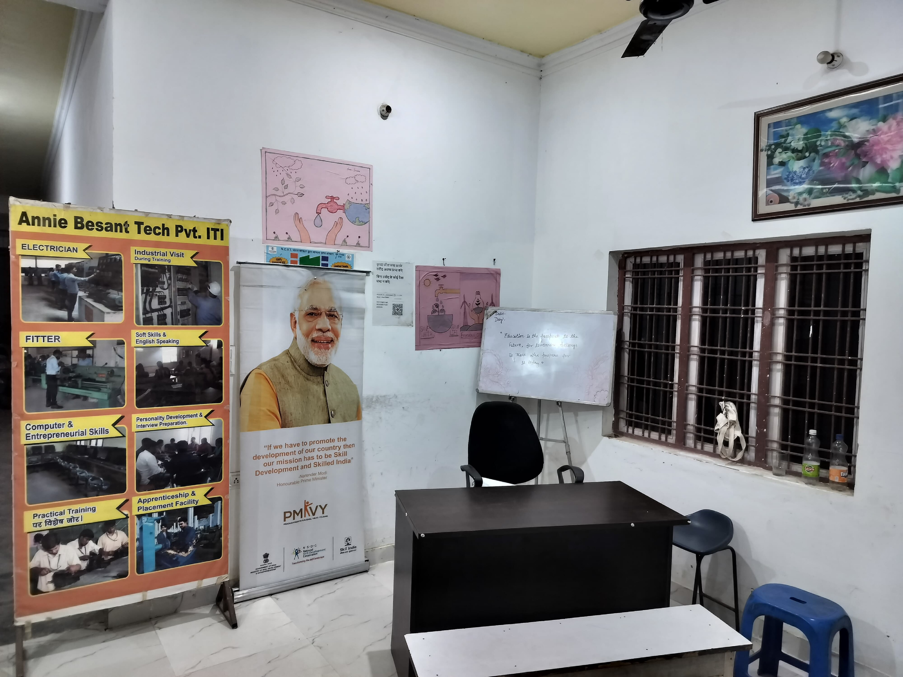
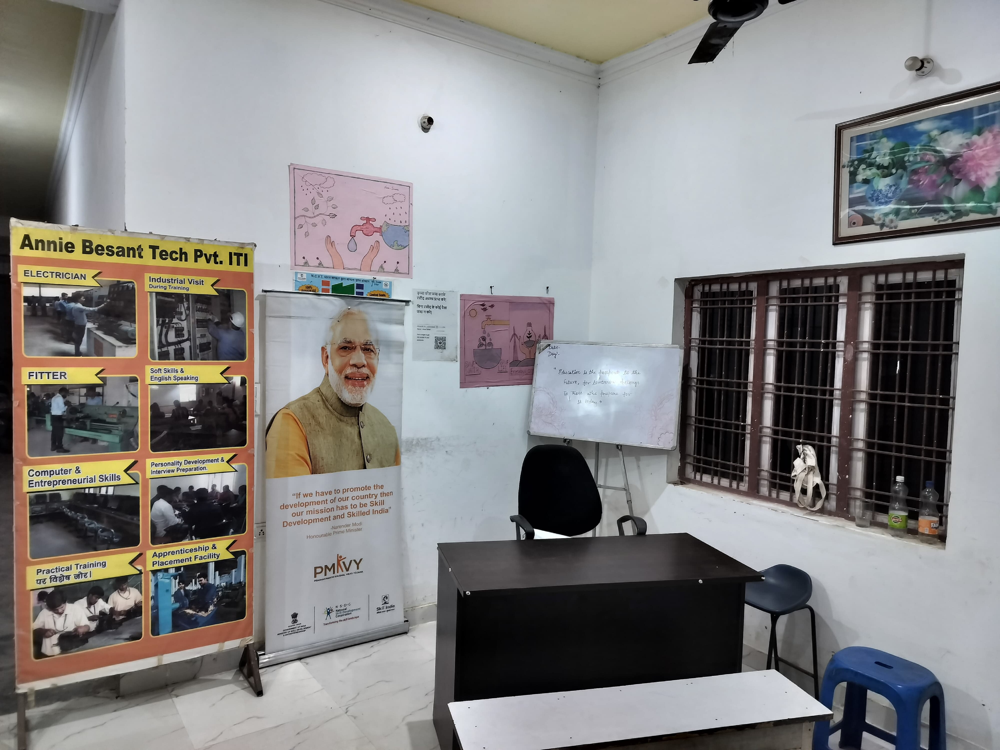
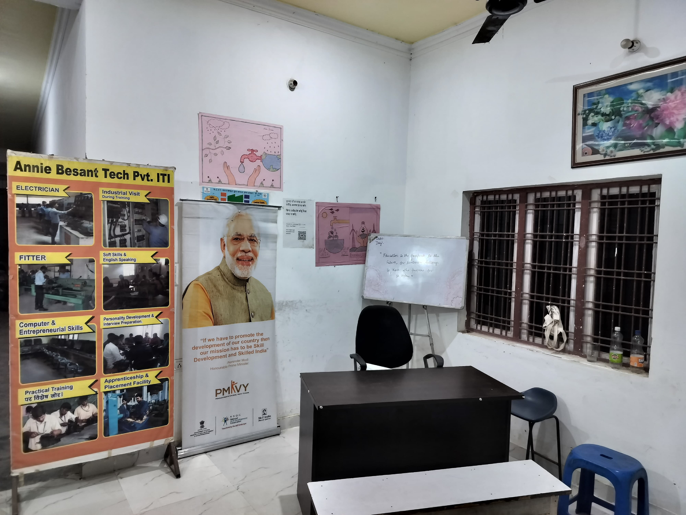
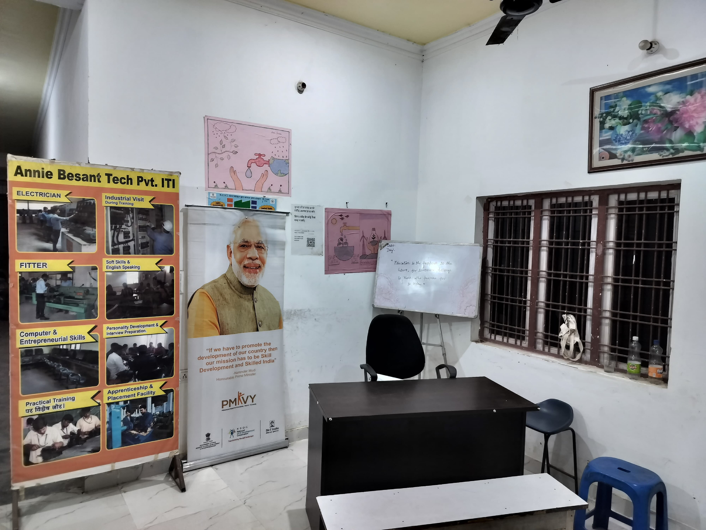

Gram Vikas Sewa Samiti (GVSS) is a society registered under the Societies Registration Act, 1860, established in 1993. GVSS is committed to empowering women and youth in urban and rural areas through skill development, social entrepreneurship, and community building initiatives.
GVSS operates the Annie Besant Tech Private ITI, offering vocational training in Electrician, Fitter, and Computer Operator and Programming Assistant (COPA) trades, with a strong record of student placements.
The organization also implements the Pradhan Mantri Kaushal Vikas Yojana (PMKVY), delivering nationally recognized skill training to youth, enhancing employability, and supporting micro-enterprise creation.
To create a sustainable, empowered society where every woman and youth has the opportunity to reach their full potential through education, livelihood, and entrepreneurship.
To mobilize and uplift marginalized communities by providing skill-based training, creating self-help groups, supporting micro-entrepreneurship, and fostering inclusive development.
Vocational training in Electrician, Fitter, and COPA trades, empowering over 300 students yearly.
Government-supported skill development initiative training over 2,000 youth for employment and enterprise.
Forming and nurturing 50+ SHGs with marketing and bank linkage support for sustainable entrepreneurship.
RPL training to 5000+ safai karamcharis through Municipal Corporations across Uttar Pradesh.
President, Ph.D., Visionary educator and rural development expert
Secretary, MBA, 25+ years of social development leadership
Address: Village Doohri, Pilkhuwa, District Hapur, Uttar Pradesh - 245304
Phone: +91 9837777222
Email: gvss.gzb@gmail.com